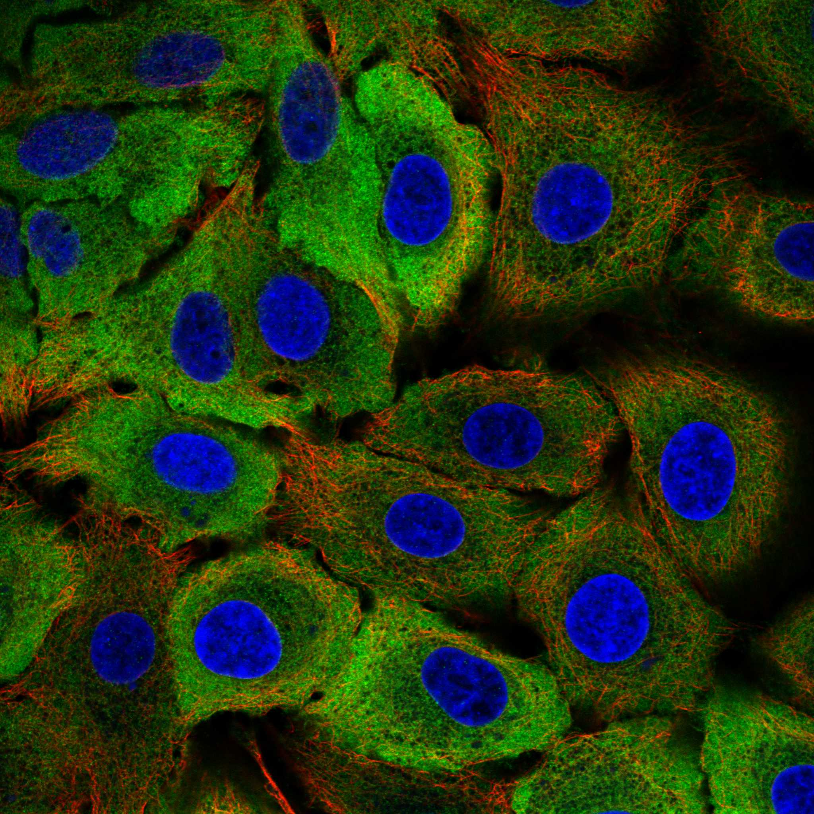
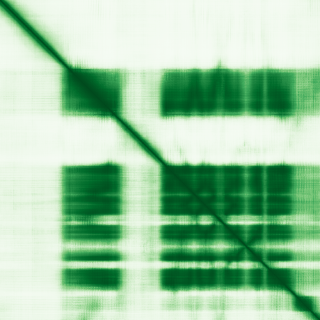

type: protein-evaluation gene: "NAP1L2" date: 2026-06-01 tags: [protein-scout, chromatin, evaluation] status: scored ---
NAP1L2 核蛋白评估报告
1. 基本信息
| 项目 | 内容 |
|---|---|
| 基因名 / 别名 | NAP1L2 / BPX |
| 蛋白全名 | Nucleosome assembly protein 1-like 2 |
| 蛋白大小 | 460 aa / 52.5 kDa |
| UniProt ID | Q9ULW6 |
2. 评分总览
| 维度 | 得分 | 新权重 | 加权后 | 关键证据摘要 |
|---|---|---|---|---|
| 核定位特异性 | 5/10 | x4 | 20.0 | UniProt Nucleus; Chromosome; Cytosol, HPA 冲突 (Plasma membrane + Cytosol) |
| 蛋白大小 | 10/10 | x1 | 10.0 | 460 aa, 52.5 kDa |
| 研究新颖性 | 10/10 | x5 | 50.0 | PubMed strict=14 (≤20 区间) |
| 三维结构 | 5/10 | x3 | 15.0 | 无 PDB；AF pLDDT 67.0, >90=30.9%, <50=35.0% |
| 调控结构域 | 7/10 | x2 | 14.0 | NAP domain (IPR002164)，组蛋白伴侣/nucleosome assembly |
| PPI 网络 | 5/10 | x3 | 15.0 | STRING NAP1L3 0.817, NAP1L5 0.673, CDX4 0.868 (textmining)；IntAct 家族互作 |
| 加权总分 | 124/180** | |||
| 互证加分 | +0.0 | |||
| 归一化总分 (÷1.83) | 67.8/100** |
3. 详细分析
3.1 核定位证据 -- ⚠️ HPA 与 UniProt 定位冲突
| 来源 | 定位 | 可信度 |
|---|---|---|
| UniProt Subcellular Location | Nucleus (ECO:0000305); Chromosome (ECO:0000305); Cytoplasm, cytosol (ECO:0000250) | 低-中（序列分析/同源推断） |
| GO-CC | chromatin (IBA:GO_Central), nucleus (IBA:GO_Central) | 中（IBA 推断） |
| HPA IF | Plasma membrane + Cytosol (Enhanced 可靠性) | 高（但非核） |
| Literature | NAP1L2 是 nucleosome assembly protein 家族成员，文献支持染色质/核内功能（核小体组装、组蛋白乙酰化调控） | 中 |
HPA IF 状态: IF available -- HPA 可靠性 Enhanced，定位 Plasma membrane + Cytosol（! 与 UniProt/文献核定位冲突）。

结论: ⚠️ 显著定位冲突。UniProt 标注 Nucleus/Chromosome 但均为低可信度（ECO:0000305/0000250）。GO-CC 仅有 IBA 推断级别。HPA Enhanced 可靠性定位为 Plasma membrane + Cytosol，完全不在核内。但文献中 NAP1L2 被描述为组蛋白伴侣参与核小体组装，且同源蛋白 NAP1L1/NAP1L3/NAP1L4 均定位核内。这种冲突降低了核定位评分至 5/10，需实验验证。
3.2 结构与数据源
| 指标 | 数值 |
|---|---|
| AlphaFold | AF-Q9ULW6-F1 |
| 平均 pLDDT | 67.0 |
| pLDDT >90 | 30.9% |
| pLDDT 70-90 | 21.3% |
| pLDDT <50 | 35.0% |
| PDB | 无 |
AlphaFold 预测质量偏低（pLDDT 67.0），<50 低置信区域高达 35.0%。NAP domain 区域（~aa 100-360）折叠较好，但 N 端和 C 端区域无序度高。无 PDB 实验结构。

| InterPro | Pfam |
|---|---|
| IPR037231 (NAP-like superfamily), IPR002164 (NAP / Nucleosome assembly protein) | PF00956 (NAP) |
染色质调控潜力: NAP1L2 属于 nucleosome assembly protein 家族，理论上参与组蛋白 H2A-H2B 和 H3-H4 的核小体组装。文献报道参与 H3 'Lys-14' 去乙酰化调控（通过 SIRT1），在骨分化衰老中起作用。但 HPA 定位结果与染色质功能矛盾，需进一步验证。
3.3 研究现状
| 指标 | 数值 |
|---|---|
| PubMed strict (Title/Abstract) | 14 |
| PubMed broad | 18 |
| 别名 | BPX（未用于 scoring） |
关键文献：
- PMID:35032339: "NAP1L2 drives mesenchymal stem cell senescence and suppresses osteogenic differentiation." (Aging Cell, 2022)
- PMID:37993768: "Disrupted cardiac fibroblast BCAA catabolism contributes to diabetic cardiomyopathy via a periostin/NAP1L2/SIRT3 axis." (Cell Mol Biol Lett, 2023)
- PMID:21333655: "Interaction between nucleosome assembly protein 1-like family members." (J Mol Biol, 2011) -- NAP1 家族互作
- PMID:10932189: "Control of neurulation by the nucleosome assembly protein-1-like 2." (Nat Genet, 2000)
- PMID:25187168: "Integrated multi-cohort transcriptional meta-analysis of neurodegenerative diseases." (Acta Neuropathol Commun, 2014)
3.4 PPI 网络（三源综合）
| Partner | Source | Score/Evidence | Relevance |
|---|---|---|---|
| NAP1L3 | STRING | 0.817 (exp 0.619) | 同源家族蛋白 |
| NAP1L5 | STRING | 0.673 (exp 0.593) | 同源家族蛋白 |
| CDX4 | STRING | 0.868 (textmining 0.865) | 转录因子 |
| H2AZ1 | STRING | 0.602 (exp 0.516) | 组蛋白变体 |
| NAP1L1 | IntAct | Y2H array (PMID:32296183) | 同源家族 |
| NAP1L5 | IntAct | protein complementation (PMID:32296183) | 同源家族 |
| FBL | IntAct | coIP (PMID:28514442) | 核仁蛋白 |
| DMAP1 | IntAct | validated Y2H (PMID:32296183) | DNMT1 相关 |
| DMAP1 | UniProt | 3 experiments | curated |
NAP1L2 的 PPI 网络以 NAP1 家族内部互作为主（NAP1L1/L3/L5）。与 H2AZ1 的实验互作（0.516）支持其组蛋白伴侣功能。FBL (fibrillarin) 的 coIP 互作连接至核仁。DMAP1 互作连接至 DNA 甲基化通路。整体网络偏弱，以家族内互作为主。
4. 总体评价
NAP1L2 是本批次中需要特别谨慎的候选。最大风险是 HPA IF 定位为 Plasma membrane + Cytosol，与 UniProt/GO-CC 的核定位推断矛盾。优势包括：极低文献量（PubMed strict=14，新颖性 10/10）、NAP domain 家族功能明确（核小体组装）、460 aa 适中大小。劣势包括：核定位证据弱且存在冲突、无 PDB 结构、AF pLDDT 仅 67.0（35% 低置信区）、PPI 网络偏弱。建议在进一步评估前通过独立 IF 实验验证核定位。
5. 数据来源
- UniProt: https://www.uniprot.org/uniprotkb/Q9ULW6
- AlphaFold: https://alphafold.ebi.ac.uk/entry/Q9ULW6
- PubMed: https://pubmed.ncbi.nlm.nih.gov/?term=NAP1L2
- Protein Atlas: https://www.proteinatlas.org/ENSG00000186462-NAP1L2
HPA IF 图像已本地嵌入。
PAE 图像说明: AlphaFold PAE 图像已重新获取并嵌入（见下方 PAE 图像修正块）；结构判断仍结合 pLDDT 与 PAE 综合判断。
<!-- AF_PAE_REPAIR_START --> PAE 图像修正（2026-06-05）: AlphaFold 提供 predicted aligned error 图像；此前“PAE 图像暂无数据”的表述为未获取/未嵌入导致。